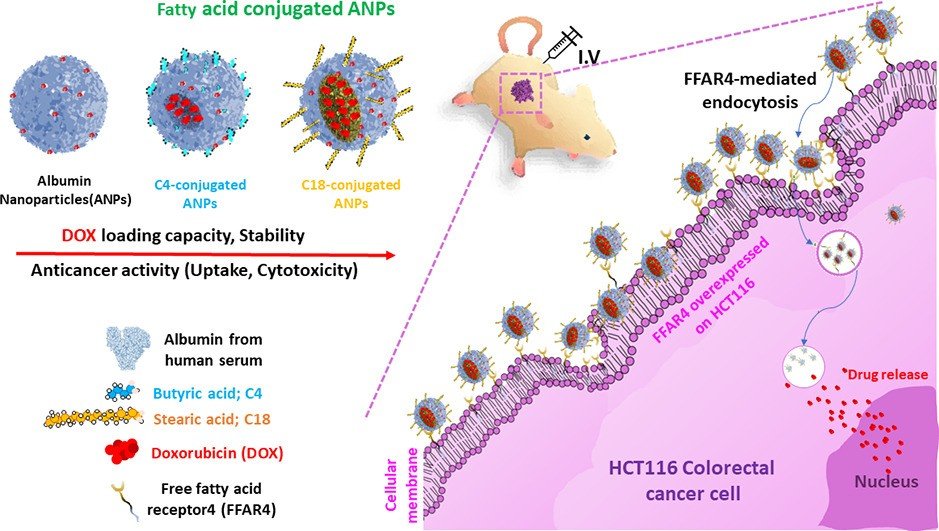

①
Direction 1 · Precision Nanodelivery
녹지 않는 항암제를 종양까지 정확히 보낼 수 있는가?

알부민은 혈액 속에서 지방산을 실어 나르는 단백질입니다. 알부민에 지방산을 접합하면 스스로 뭉쳐 나노입자가 되고, 그 안에 물에 녹지 않는 항암제를 담을 수 있습니다.
지방산 사슬길이에 따라 나노화 능력, 약물 봉입과 세포 전달, 대장암 이종이식 마우스에서의 항암활성이 달라진다는 것을 밝혔습니다 [19][25][26]. 이 원리를 재조합 인혈청알부민(rHSA) 구조체 라이브러리로 넓혀, 난용성 키나아제 저해제(Nilotinib·Dasatinib·Cabozantinib 등)에 맞는 주사제형의 조성과 제조공정을 예측하는 플랫폼을 만들고 있습니다.